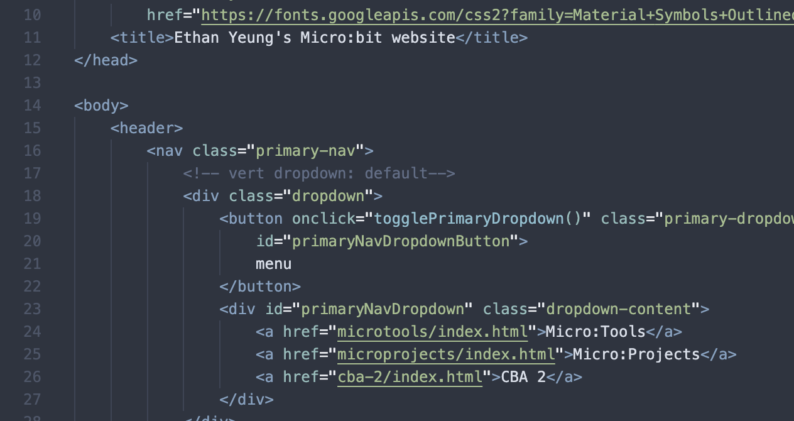

About CBA 2
I deep-fried my brain
Classroom-based assessments, or "CBA"s, are projects carried out by Irish Junior Cycle students to assess their skills and knowledge of a particular subject when given a task that is more relavent to real-life situations. For example, an English CBA may be to give a presentation on a certain topic to the whole class, and a music CBA may be to write a programme note for certain pieces of music.
Of course, the computer subject, or more specifically the "Junior Cycle Coding Short Course", is no exception to this. Our CBA is based on our computer course for the past term (which is Term 2), where we learnt about creating websites using HTML and CSS. We would base our website content on our Term 1 computer course, which involves programming a special device called a Micro:Bit. However, the content is not the main point of the CBA: good use of HTML and CSS (and perhaps a bit of JS) is what the teacher is looking out for.
What is HTML?
HTML, short for "HyperText Markup Language", is the standard code used for structuring web pages. In simple terms, web browsers take in HTML and output what you see on the page. It is based on elements, in which content is wrapped in. The tags and its attributes control how its content will be processed.
However, HTMl can only control the content and structure of the website. To create designs and add interactive elements, CSS ("Cascading Style Sheets") and JS ("JavaScript") are used alongside HTML. Together, they make a complete, functioning website, like this one.